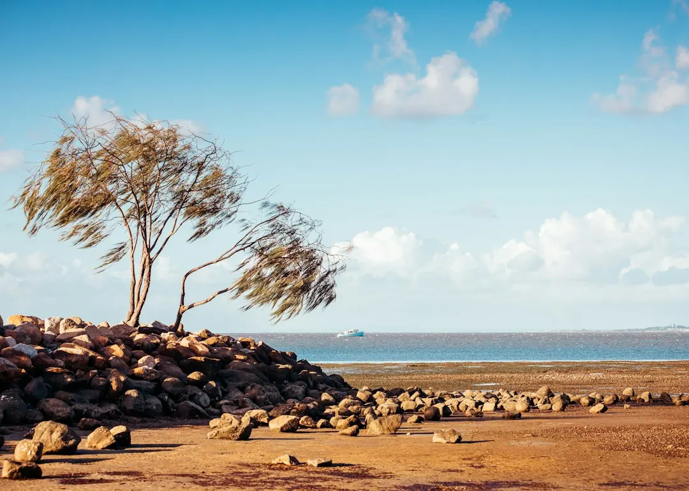

A simple, accessible concrete sleeper wall in Brisbane may start at around $300 per square metre of wall face. Taller, engineered or difficult access work can reach $1,000 or more per square metre. A wall that, together with the soil it holds back, is no more than 1 m high, carries no surcharge load and sits at least 1.5 m from a building or another retaining wall generally needs no building approval. Other designs usually require approval and RPEQ involvement.
For homeowners comparing concrete sleeper walls brisbane options, the practical decision comes down to wall height, retained soil, drainage, access, approval requirements and the detail included in each quote.
Concrete Sleeper Walls Brisbane Explained
The Brisbane Sleeper Wall Installers website describes concrete sleeper retaining walls for garden beds, terraces, levelled lawns and larger structural changes on sloping blocks. The system stacks steel reinforced concrete sleepers between galvanised steel H posts or C posts. Concrete does not rot and is not eaten by termites, while many manufacturers quote a design life of around 50 years.
Durability is only one part of the specification. The soil being held back, the slope, nearby structures and anything placed above the wall affect the design question. A low garden edge differs from a wall supporting a driveway, building edge, fence or higher section of a sloping block.
- Describe whether the wall will form a garden bed, terrace or level lawn.
- Measure the approximate length and exposed height.
- Record steep slopes, narrow paths and restricted access.
- Note nearby buildings, existing walls, fences, driveways and other loads.
Check the approval pathway
The Brisbane guide states that a wall which, together with the soil it holds back, is no more than 1 m high, carries no surcharge load and sits at least 1.5 m from a building or another retaining wall generally needs no building approval. The full combination of conditions matters, so the visible wall height alone is not enough for a decision.
Outside those conditions, building approval and a site specific design are usually required. The design or certification must come from a Registered Professional Engineer of Queensland, or someone under that engineer's direct supervision. Ask who will prepare the design, what documents will be supplied and whether a building certifier is involved.
A fence above the wall creates another approval question. In Brisbane, the fence and retaining wall heights count together. A combined height over 2 m above natural ground needs building approval, so the intended fence should be discussed before the post layout is finalised.
Compare the construction details
Common sleepers are 2.0 m or 2.4 m long, 200 mm high and about 75 to 80 mm thick. They are steel reinforced and often rated at 40 MPa or more. Post size and hole depth come from the manufacturer's design tables or an engineer. A useful quote identifies the proposed sleeper and post system instead of using only the words concrete wall.
Drainage should be visible in the scope. A typical build uses slotted agricultural pipe at the base, free draining gravel backfill and geotextile fabric. Water should be directed to a lawful point of discharge, not onto a neighbour's land. Ask whether excavation, disposal, gravel, fabric, pipework and the discharge connection are included.
Before post holes or drainage trenches are dug, a free Before You Dig Australia enquiry can identify underground electricity, gas, water and telecommunications assets. Final hole depth should follow the manufacturer's tables or the engineer's design. These details can explain why two apparently similar quotations differ.
Read the cost range in context
Published Brisbane price guides put installed concrete sleeper retaining walls from around $300 per square metre of wall face for a simple, accessible low wall. Taller, engineered or hard to access work can rise to $1,000 or more per square metre. These figures are indicative, not a fixed price for a particular property.
Height, access, excavation, drainage, engineering and approvals can all change the final amount. A narrow side path may affect material handling. A sloping block may require a different design approach. Surcharge loading or a fence above the wall may also alter the specification.
Request an itemised quote showing dimensions, sleeper and post sizes, excavation, disposal, drainage, backfill, engineering, approval work, fence interfaces and landscaping. Comparing those inclusions gives a clearer result than comparing a single square metre rate.
Prepare the questions before work starts
The first enquiry should include the suburb, approximate wall length and height, access conditions and anything close to the retained soil. Photos showing the slope, boundary, existing wall, fence and access path can help clarify the site before a quotation is prepared.
Queensland licensing rules set out who can perform work once a job is valued over $3,300. Ask how that requirement applies to the proposed scope and what insurance documentation is relevant. If an old timber sleeper wall is being replaced, confirm whether removal and disposal are included. Concrete sleepers can cost more upfront than treated pine, so the comparison should consider both the initial scope and the intended service life.
For another local planning reference, see the guide to retaining wall installers in Brisbane. Decide only after checking the approval position, drainage plan, site access and itemised inclusions.
- Describe the site. Provide the suburb, approximate length and height, slope, access limits and nearby structures.
- Check the design path. Confirm whether the wall and retained soil fit the low wall conditions or need approval and RPEQ design or certification.
- Compare itemised quotes. Check excavation, drainage, backfill, engineering, approvals, disposal and fence work before deciding.
- Clear underground services. Arrange a Before You Dig Australia enquiry before post holes or drainage trenches are excavated.
| Scenario | Decision question | Quote detail to request |
|---|---|---|
| Low garden or lawn wall | Does the wall and retained soil meet the 1 m, no load and separation conditions? | Dimensions, drainage, access and materials |
| Taller or engineered wall | What approval and site specific design are required? | RPEQ responsibility, engineering, excavation and certification |
| Wall with fence above | Does the combined height exceed 2 m above natural ground? | Fence interface, total height and approval pathway |
Common questions
How much do concrete sleeper retaining walls cost in Brisbane? Published Brisbane guides indicate around $300 per square metre of wall face for a simple accessible low wall, rising to $1,000 or more for taller, engineered or difficult access work. The final price depends on scope, access, excavation, drainage, engineering and approvals.
Does a 1 m retaining wall need approval? A wall which, together with the soil it holds back, is no more than 1 m high generally needs no building approval when it carries no surcharge load and sits at least 1.5 m from a building or another retaining wall. The actual site conditions should be checked before work starts.
What drainage is normally included? A typical build uses slotted agricultural pipe, free draining gravel backfill and geotextile fabric, with water directed to a lawful point of discharge. Ask for each drainage component to appear in the quote.
Can a fence be built above the wall? Yes, but the fence and retaining wall heights count together in Brisbane. A combined height over 2 m above natural ground needs building approval.
When is an engineer needed? Walls outside the low wall conditions usually need building approval and a site specific design or certification from an RPEQ, or someone under that engineer's direct supervision.
This guide covers wall selection, Brisbane approval questions, drainage, quote inclusions and indicative installation costs.